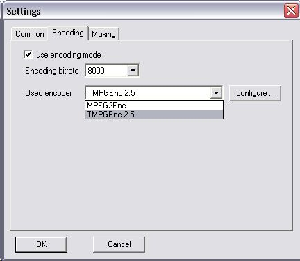
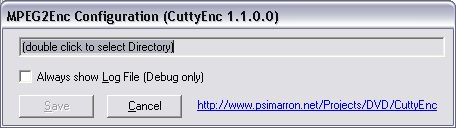

Using the MPEG2Enc Utility with Cuttermaran
The software you can download here makes it possible to use the free MPEG2Enc utility to re-encode the cut points in Cuttermaran. Cuttermaran itself is freeware but for re-encoding on a B-Frame cut it will use TMPGEnc which is a commercial application. Since starting with version 1.58 Cuttermaran will allow to use other encoders as well I wrote a connector to MPEG2Enc.
You can use CuttyEnc for free but on your own risk. The source code can be found here. The official documentation is on the HighPaq.Net. Since you are using Cuttermaran I would suggest to take a look at the great DVD Guide on this site.
If Cuttermaran 1.63 is up and running the following additional installations have to be done to get the connector running:
The next time Cuttermaran is started the new encoder can be selected using the Actions/Settings... dialog.

After the encoder has been selected it must be configured once before it can be used by pressing the Configure... button (the dialog might be in german depending on the language selected in Cuttermaran).
The directory path to the MPEG2Enc und DLLs is selected by double clicking the text field. The additional option should be left in the original state.
If the directory path is not set MPEG2Enc must either be in the encode directory itself or in a directory External Tools below the Cuttermaran main directory or CuttyEnc will fail. The error message generated will not be very helpful if you're not a .NET developer - sorry for that.
Changes in Version 1.2.0.0 (2005/3/15)
Experimental fixes to support cutting HDTV material as described in the Cuttermaran forum. The changes should not harm normal operations because the additional code activates only at 720 (or more) vertical lines per frame.
The HDTV modus will only work without error message if you use the patched MPEG2Enc.exe version as explained in the Cuttermaran forum - please refer to the discussion thread for more details.
Changes in Version 1.1.0.0 (2004/11/12)
The first version of CuttyEnc used the free JPEG2YUV tool included with the DVDAuthor and the GUI for DVDAuthor. The version included has a bug which leads to a change in the colors. In fact there is a newer version of the tool which (with a new command line option -R) corrects this behaviour. This version is not available as a windows binary download yet and most important: after taking a deeper look in the problem I found that JPEG2YUV is not really needed!
Cuttermaran offers the movie sequence to re-encode as an AVI file to the encoding provider. The codec used is YV12. The originial CuttyEnc took this, decoded it to BMP (RGB), packed it to JPEG and let JPEG2YUV generate a so called YUV4MPEG2 stream which is the only input format accepted by MPEG2Enc. Not only the colors are changed but there is quite a bit of quality loss due to the conversions and packings involved.
Starting with 1.1.0.0 CuttyEnc no longer needes JPEG2YUV. In fact the expected YUV4MPEG2 stream uses a IYUV codec with only some additional string headers in between. IYUV is semantically identically to YV12 with only the color planes physically swapped. So CuttyEnc takes the YV12 input, swapps the color plans, adds the headers and sends the result to MPEG2Enc. MPEG2Enc will get the exact output from Cuttermaran with no color modifications and full quality. No processing time gets lost due to conversions and no temporary file space is needed in addition to the AVI file from Cuttermaran itself.
The result is now nearly the same as for TMPGEnc. In very large magnifications some tiny artefacts on color borders are visible which TMPGEnc will not produce. Personally I don't think that this is worth the difference in price. In addition the 'DVD compliant stream' option in Cuttermarn now generates a smooth result and even in an animation scene I could see no difference from the original movie - using 8000kbps encoding and no magnifier.